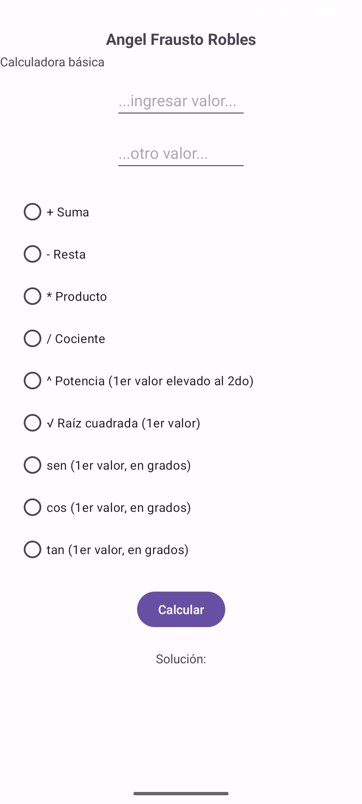
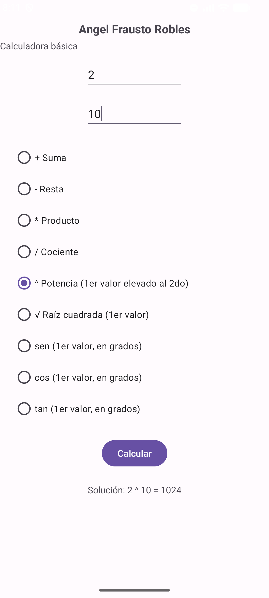
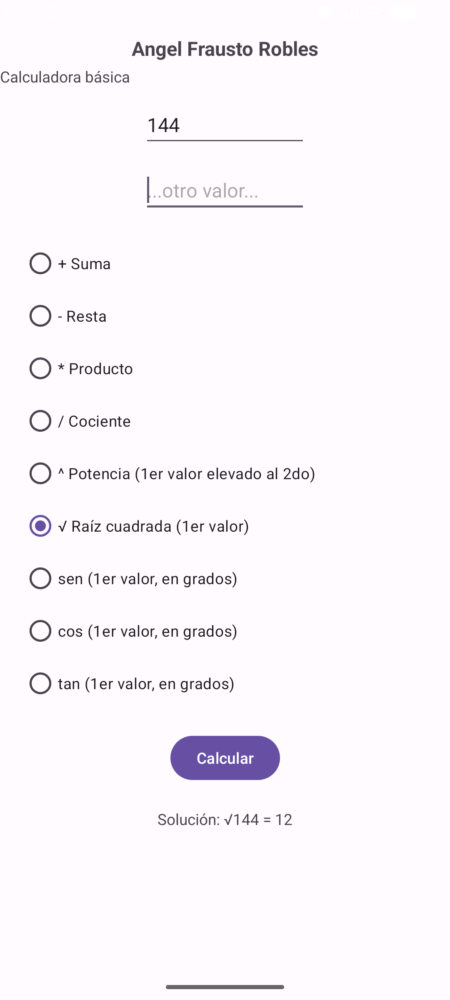
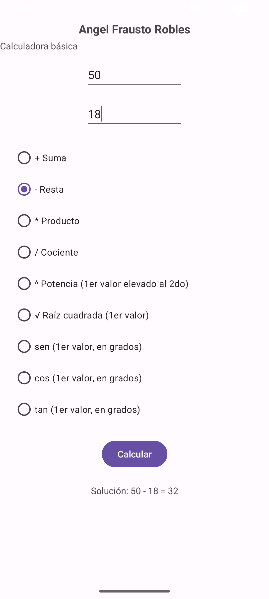
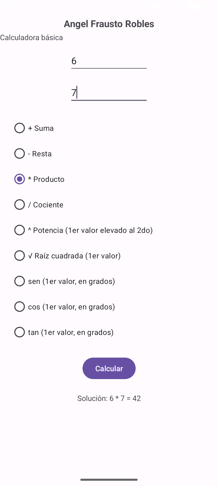
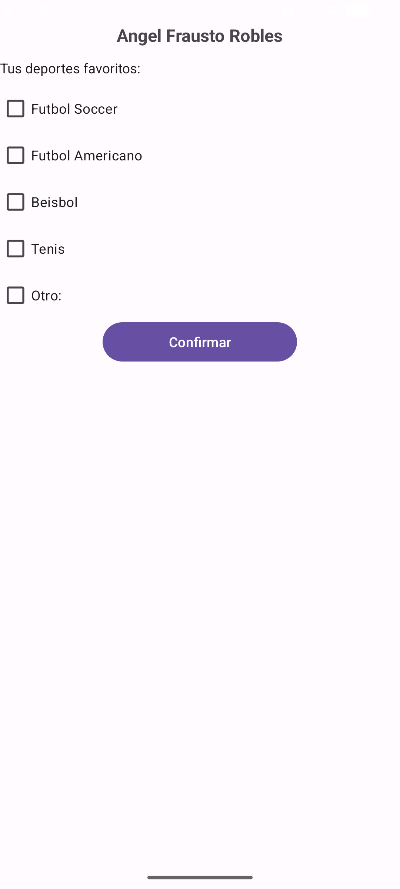
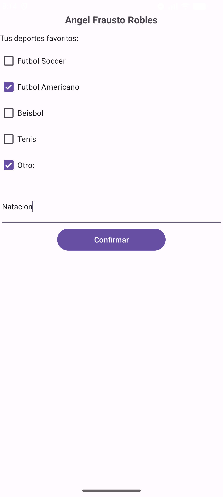
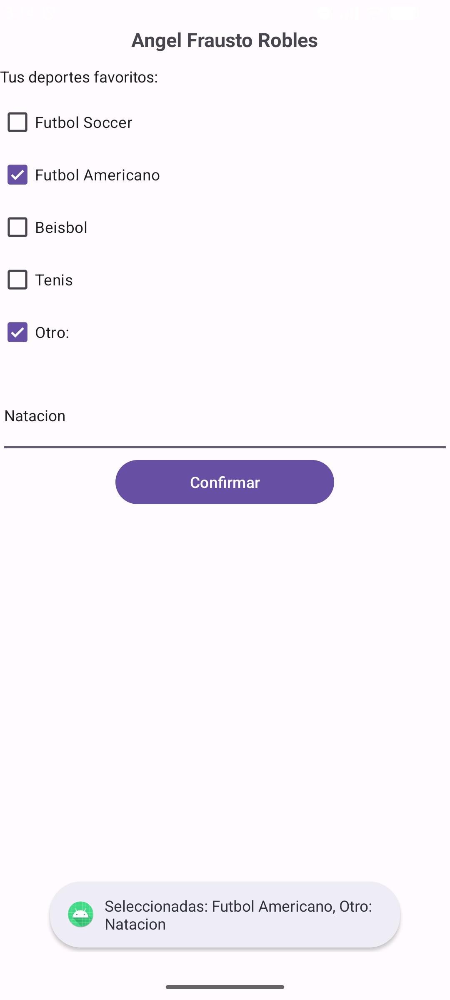
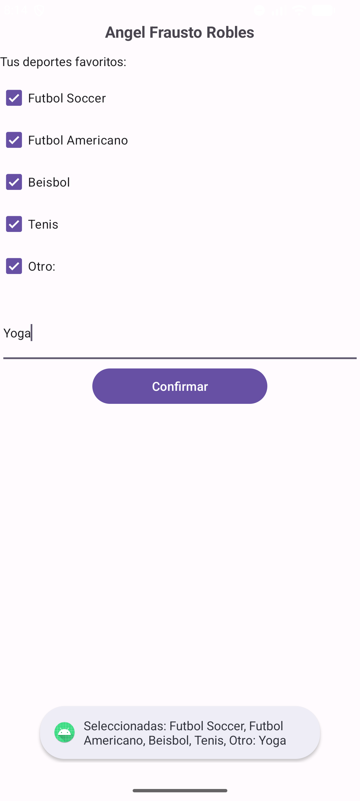

| Asignatura: | Desarrollo de Aplicaciones Móviles Nativas |
| Práctica: | Práctica 9 |
| Alumno: | Angel Frausto Robles |
| Grupo: | 7CM4 |
| Fecha: | 25 de septiembre de 2026 |
Esta práctica trabaja con los dos componentes que Android ofrece para que el usuario elija entre
varias opciones. Los RadioButton, agrupados en un
RadioGroup, permiten elegir una sola opción a la vez, porque el grupo
desmarca las demás al marcar una. El CheckBox permite marcar cualquier
combinación de opciones y se consulta con isChecked().
Objetivos:
RadioGroup que ejecute la operación elegida sobre dos valores.CheckBox que muestre u oculte un campo de texto con un OnCheckedChangeListener.Toast todas las opciones seleccionadas (Ejercicio 2).
Proyecto Java con dos actividades: MainActivity para la Parte 1 y
CheckActivity para la Parte 2. Ambas siguen el código del material del
profesor, que usa AppCompatActivity y, en la calculadora,
ConstraintLayout. Cada pantalla lleva mi nombre como encabezado para
identificar las capturas.
La calculadora tiene dos campos numéricos (inputType="number"), un
RadioGroup con las operaciones y un botón que llama al método
calcular mediante android:onClick. El método
lee los dos valores, revisa qué RadioButton está marcado y escribe la
operación con su resultado en el TextView de solución.

Se agregaron seis RadioButton al grupo y su lógica en
calcular. El cociente y la potencia usan los dos valores. La raíz
cuadrada, el seno, el coseno y la tangente usan solo el primero, y los ángulos se dan en grados
(se convierten con Math.toRadians). El resultado se muestra sin
decimales cuando es entero y con cuatro decimales en otro caso. La pantalla también avisa si se
divide entre cero, si se pide la raíz de un negativo o si falta algún valor.


Las tres operaciones originales del ejemplo también funcionan con esta versión:


La pantalla tiene cuatro CheckBox de deportes y uno llamado "Otro:".
El campo de texto de "Otro:" empieza con visibility="gone" y un
OnCheckedChangeListener lo muestra o lo oculta según el estado de esa
casilla. El botón "Confirmar" llama a opcion, que muestra un
Toast.


El ejemplo original mostraba solo el texto de "Otro". Ahora opcion
recorre los cinco CheckBox, arma una cadena con los que están marcados
(usando el texto escrito en "Otro:") y la muestra en el Toast. Si no hay
ninguna marcada, el mensaje lo indica.


[Conclusiones personales del alumno sobre RadioButton/RadioGroup y CheckBox.]
developer.android.com/reference/android/widget/RadioButtondeveloper.android.com/reference/android/widget/CheckBox